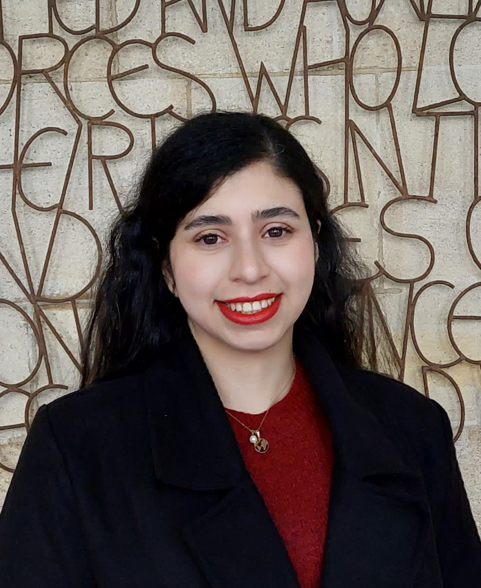

Assistive Rehabilitative Technology
Bridging clinical practice with engineering: devices that meet patients where they are.
I turn pain points into patient outcomes — researching foot drop, assistive devices, and the gap between rehabilitation science and the people who need it.

I am deeply committed to improving the quality of life for people with long-term conditions. My passion lies in transforming challenges into opportunities — turning pain points into meaningful solutions that enhance real-world patient outcomes through innovation, rehabilitation science, and entrepreneurship.
Bridging clinical practice with engineering: devices that meet patients where they are.
Software-driven interventions that complement physical therapy and extend its reach.
Gait analysis, motion capture, and kinematics to understand how the body moves and heals.
Designing with — not for — the people who'll use it every day.
Translating research into real businesses — founder of an orthopaedic startup in Tehran.
Moving evidence from the lab into the clinic — and back.
Open to PhD collaborations, talks, advisory work on medical-device design, and anything that helps people move more freely. Always happy to hear from researchers, clinicians, and founders in the rehabilitation space.